Return To Catalogue - Turkey overview
Note: on my website many of the
pictures can not be seen! They are of course present in the
catalogue;
contact me if you want to purchase it.
For stamps of Turkey issued from 1863 to 1875, click here.
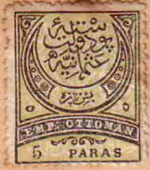


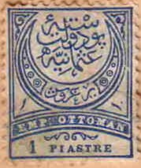


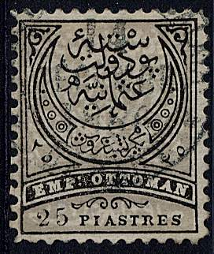
5 pa black and yellow (1881) 5 pa violet and grey (prepared, but not issued) 5 pa black and grey (1886) 5 pa green and yellow (1888) 10 pa black and lilac 10 pa black and green (1884) 10 pa green (1884) 10 pa green and grey (1890) 20 pa violet and green 20 pa black and red (1880) 20 pa red (1884) 20 pa red and grey 20 pa black (official stamp, 1888) 50 pa blue and yellow 1 Pi black and blue (1880, error: inscription 'PIASTRES', with 'S') 1 Pi black and blue (1880, inscription 'PIASTRE') 1 Pi blue and grey (1884) 1 Pi black (official stamp, 1888) 2 Pi black and brown 2 Pi olive and brown (1884) 2 Pi orange and blue (1886) 2 Pi lilac and blue (1888) 2 Pi olive and yellow (1890) 2 Pi black (official stamp, 1888) 5 Pi red and blue 5 Pi brown (1884) 5 Pi green and blue (1886) 5 Pi brown and grey (1888) 5 Pi yellow and grey (1890) 25 Pi lilac and red 25 Pi black and grey (1884) 25 Pi brown and grey (1886) 25 Pi red and yellow (1888)
The Turkish value was written in the space above the 'OTT', Arabic numerals were given above 'EMP' and 'MAN', the value was also indicated in Latin numerals in the lower left corner. These stamps exist with various perforations (11 1/2 or 13 1/2), imperforate stamps also exist (rare):

Imperforate 1 Pi stamp. The Senf catalogue of 1938 states that
these imperforate stamps and tete-beche stamps were produced for
the stamp dealers Corpy and Glavany from Istanbul. Next to it a
stamp with inverted background, also produced for Corpy &
Glavany (could this be Alfred Antoine Glavany and his wife
Angèle Corpi? Glavany issued the 'Catalogue des timbres-poste,
cartes etc. de Turquie' in 1889; 48 pages).
The 1 Pi was first issued with text 'PIASTRES', when the error was discovered, the last 'S' of this word was erased to make 'PIASTRE'. Sometimes small parts of the 'S' can still be seen.
Value of the stamps |
|||
vc = very common c = common * = not so common ** = uncommon |
*** = very uncommon R = rare RR = very rare RRR = extremely rare |
||
| Value | Unused | Used | Remarks |
| 5 pa black and yellow | c | * | |
| 5 pa violet and grey | RR | - | |
| 5 pa black and grey | c | c | |
| 5 pa green and yellow | c | c | |
| 10 pa black and lilac | c | * | |
| 10 pa black and green | * | * | |
| 10 pa green | c | c | |
| 10 pa green and grey | c | c | |
| 20 pa violet and green | *** | *** | |
| 20 pa black and red | c | * | |
| 20 pa red | c | c | |
| 20 pa red and grey | c | c | |
| 20 pa black | * | * | Official stamp |
| 50 pa | * | ** | |
| 1 Pi black and blue | *** | * | 'PIASTRE' |
| 1 Pi black and blue | c | * | 'PIASTRES' |
| 1 Pi blue and grey | c | c | |
| 1 Pi black | * | * | Official stamp |
| 2 Pi black and brown | c | * | |
| 2 Pi olive and brown | c | c | |
| 2 Pi orange and blue | c | c | |
| 2 Pi lilac and blue | c | c | |
| 2 Pi olive and yellow | * | c | |
| 2 Pi black | * | ** | Official stamp |
| 5 Pi red and blue | *** | *** | |
| 5 Pi brown | * | ** | |
| 5 Pi green and blue | * | * | |
| 5 Pi brown and grey | * | ** | |
| 5 Pi yellow and grey | *** | *** | |
| 25 Pi lilac and red | R | R | |
| 25 Pi black and grey | RR | RR | |
| 25 Pi brown and grey | R | R | |
| 25 Pi red and yellow | R | R | |
Newspaper stamp (1879), overprinted 'IMPRIMES'
10 pa black and lilac
This overprint can be found on other stamps, but it is either forged or non-official (see examples above, the stamp dealers Corpi and Glavany seem to have been involved in this as well...).
Value of the stamps |
|||
vc = very common c = common * = not so common ** = uncommon |
*** = very uncommon R = rare RR = very rare RRR = extremely rare |
||
| Value | Unused | Used | Remarks |
| 10 pa | RR | RR | |
Newspaper stamps (1891), overprinted 'IMPRIME' in a rectangle


10 pa green and grey 20 pa red and grey 1 Pi blue and grey 2 Pi olive and grey 5 Pi yellow and grey
These overprints also exist in blue or red (rare). Forged overprints exist!
Value of the stamps |
|||
vc = very common c = common * = not so common ** = uncommon |
*** = very uncommon R = rare RR = very rare RRR = extremely rare |
||
| Value | Unused | Used | Remarks |
| 10 pa | *** | ** | |
| 20 pa | *** | *** | |
| 1 Pi | *** | *** | |
| 2 Pi | R | R | With blue overprint: forgery |
| 5 Pi | RR | RR | With blue overprint: forgery |
Some of these stamps were overprinted in 1917 (most of them are rare):
(Overprint of a 'beetle' like text on a 2 Pi official stamp,
could be a forged overprint)
5 pa black and yellow (red overprint) 5 pa black (red overprint) 10 pa black and green (red overprint) 10 pa green 50 pa blue and yellow 1 Pi black (red overprint, official stamp) 2 Pi black and brown (red overprint) 2 Pi olive and brown 2 Pi orange and blue 2 Pi black (red overprint, official stamp) 5 Pi brown 5 Pi green and blue (red overprint) 5 Pi brown and grey 25 Pi lilac and red 25 Pi brown and grey
Value of the stamps |
|||
vc = very common c = common * = not so common ** = uncommon |
*** = very uncommon R = rare RR = very rare RRR = extremely rare |
||
| Value | Unused | Used | Remarks |
| 5 pa black and yellow | R | R | |
| 5 pa black | * | * | Exists with inverted overprint: *** |
| 10 pa black and green | R | R | |
| 10 pa green | R | R | |
| 50 pa | R | R | |
| 1 Pi | R | R | On official stamp |
| 2 Pi black and brown | R | R | |
| 2 Pi olive and brown | R | R | |
| 2 Pi orange and blue | ** | ** | |
| 2 Pi black | R | R | On official stamp |
| 5 Pi brown | R | R | |
| 5 Pi green and blue | R | R | |
| 5 Pi brown and grey | R | R | |
| 25 Pi lilac and red | RR | RR | |
| 25 Pi brown and grey | RR | RR | |
Bogus and 'highly suspicious' overprints:
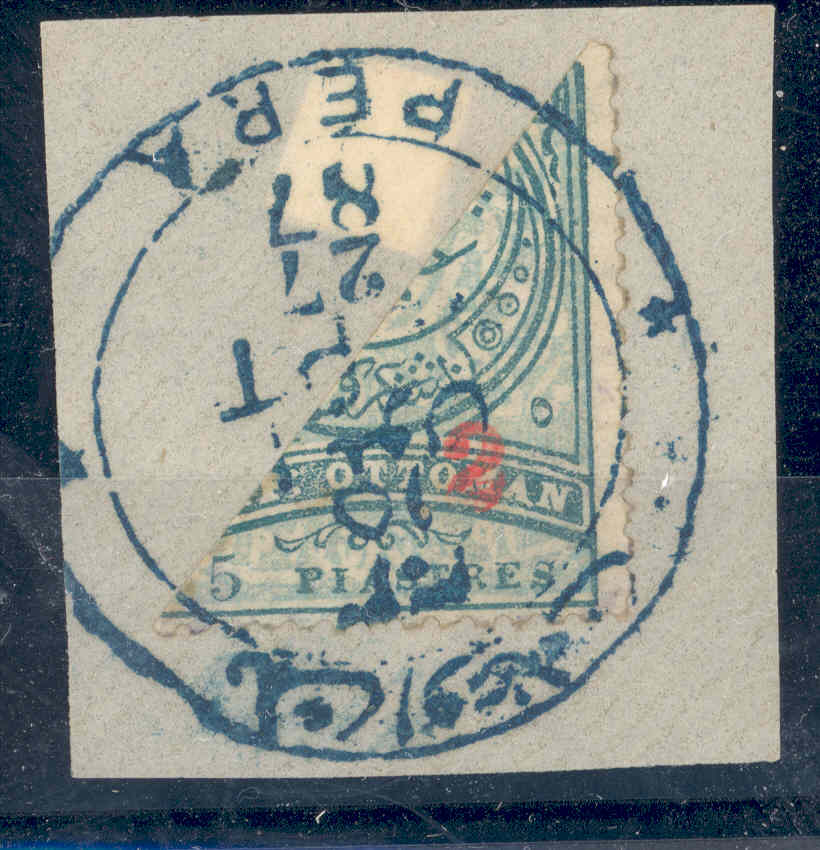 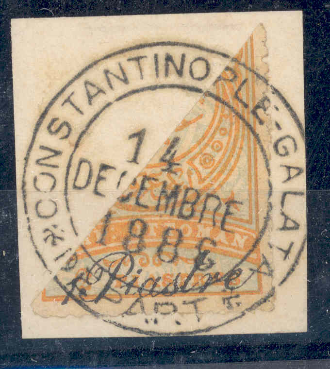
(I have seen many bisected stamps with exactly the same cancel
'14 DECEMBRE 1886')
Some bisected stamps exist surcharged with a new
value. The following values exist:
'2' (red) on 5 Pi green and blue,
'10' (blue) on 20 pa red,
'10 Paras' in fancy letters on 20 pa red,
'20 Paras' (in fancy letters) on 1 Pi blue and grey,
'1 Piastre' (in fancy letters) on 2 Pi olive and yellow,
'1 Piastre' (in fancy letters) on 2 Pi orange and blue,
'2 Piastres' (in fancy letters) on 5 Pi green and blue.
These overprints are of private origin, specially prepared for
stamp collectors. Many of them exist with forged cancels.
Forgeries exist of these bisected stamps, I don't know if the
shown two stamps are 'original'.
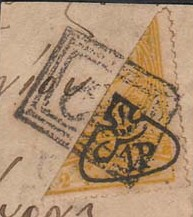
Furthermore some bisected stamps exist with a 'P1' or '1P' overprint (together with arabic overprints). These overprints also have a private origin and were made for stamp collectors only.

Overprint in red for Monastir(?): '1911' and further surcharged 1
Pi on 20 pa, 1 Pi on 1 Pi and 1 Pi on 2 Pi. Are these stamps
bogus issues? I've also seen this overprint in black and red on
other values (always 1 PIASTRE).
Postcards etc:
(A postcard 'Carte Postale' in the same design, 20 pa red,
reduced size)
A 20 pa lilac and a 20 pa black and red should also exist.
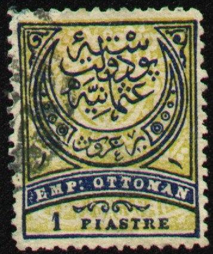
Mystery stamp: 1 Pi blue and yellow (the colour of the 50 pa),
image obtained thanks to Ahmed Zaki.
Cancels, stamp used in Musul (Irak):
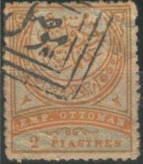
Forgeries exist, examples:
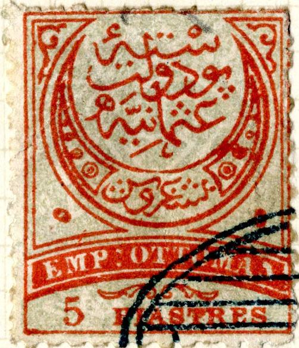 


The ':' behind 'EMP' is too far from this word in the above
forgeries. The ornament below 'OTTOMAN' points to the 'A' of this
word instead of the 'M' in the genuine stamps. They always(?)
have the same cancel and ellipse with straight lines.
I know that the Spiro brothers made forgeries of at least the values 50 pa blue and yellow and 25 Pi lilac (probably the image above). I've seen whole sheets of 25 stamps of these forgeries. In the genuine 50 pa the 's' of 'paras' is slanting to the right.

Other forgery
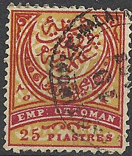

Forgeries of the 25 Pi often with a CONSTANTINOPLE GALATA??
cancel.


Forgeries of the 25 Pi values, made by the same forger.

Badly done 50 pa forgery.

Badly done 2 Pi stamp; most probably a forgery.
In The Philatelic Journal of America; October 1894, No 118, Vol XII, page 148; a deceptive forgery is described. A full description can be found there; the 'S' of 'PIASTRES' is not slanting forwards, the inscriptions are different in many details.
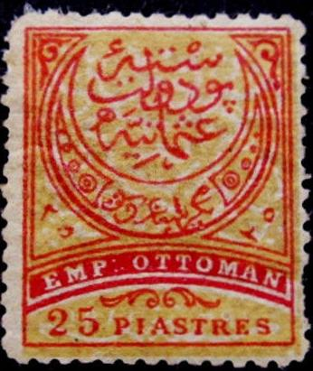
Forgeries as described in the Philatelic Journal of America. The
Serrane Guide says that these forgeries are of Turkish origin.
Photograph of the forgery and the genuine stamp taken from the
Philatelic Journal of America.


Sperati forgeries of the 25 Pi stamp.
Forged overprints made by the forger Fournier. Images obtained
from 'The Fournier Album of Philatelic Forgeries'

Eastern Rumelia stamp

10 pa green 20 pa red 20 pa black (postage due stamp) 20 pa black on red (postage due stamp) 1 Pi blue 1 Pi black (postage due stamp) 2 Pi brown 2 Pi black (postage due stamp) 5 Pi lilac
Value of the stamps |
|||
vc = very common c = common * = not so common ** = uncommon |
*** = very uncommon R = rare RR = very rare RRR = extremely rare |
||
| Value | Unused | Used | Remarks |
| 10 pa | c | c | |
| 20 pa red | c | c | |
| 20 pa black | ** | * | |
| 20 pa black on red | c | c | |
| 1 Pi blue | * | c | |
| 1 Pi black | ** | * | |
| 2 Pi brown | * | c | |
| 2 Pi black | ** | ** | |
| 5 Pi | *** | * | |
Surcharged (1897)
'5 Cinq Paras' (red) on 10 pa green
Value of the stamps |
|||
vc = very common c = common * = not so common ** = uncommon |
*** = very uncommon R = rare RR = very rare RRR = extremely rare |
||
| Value | Unused | Used | Remarks |
| 5 pa on 10 pa | c | c | A misprint 'Cniq' exists: *** |
Overprinted with turkish text (Newspaper, 1894)
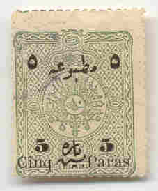
'5 Cinq Paras' (black) on 10 pa green 10 pa green 20 pa red 1 Pi blue 2 Pi brown 5 Pi lilac
Value of the stamps |
|||
vc = very common c = common * = not so common ** = uncommon |
*** = very uncommon R = rare RR = very rare RRR = extremely rare |
||
| Value | Unused | Used | Remarks |
| 10 pa | * | c | |
| 20 pa | * | c | |
| 1 Pi | * | c | |
| 2 Pi | ** | * | |
| 5 Pi | *** | *** | |
| 5 pa on 10 pa | c | c | Misprint 'Cniq': *** |
Overprinted with a crescent and 6-pointed star (1915)
10 pa green (red overprint) 2 Pi brown 5 Pi lilac
Value of the stamps |
|||
vc = very common c = common * = not so common ** = uncommon |
*** = very uncommon R = rare RR = very rare RRR = extremely rare |
||
| Value | Unused | Used | Remarks |
| 10 pa | c | c | |
| 2 Pi | * | c | |
| 5 Pi | * | * | |
Surcharged and overprinted with black crescent and 6-pointed star (1915)

'5 Cinq Paras' (red) on 10 pa green
Value of the stamps |
|||
vc = very common c = common * = not so common ** = uncommon |
*** = very uncommon R = rare RR = very rare RRR = extremely rare |
||
| Value | Unused | Used | Remarks |
| 5 pa on 10 pa | c | c | |
Overprinted with arabic text in two lines (national celebration 1916)
(Sorry, no picture available yet)
10 pa green
Value of the stamps |
|||
vc = very common c = common * = not so common ** = uncommon |
*** = very uncommon R = rare RR = very rare RRR = extremely rare |
||
| Value | Unused | Used | Remarks |
| 10 pa | ** | ** | |
Overprinted with turkish text (newspaper stamp), crescent and 6-pointed star (1915)

10 pa green (red overprint) 2 Pi brown
Value of the stamps |
|||
vc = very common c = common * = not so common ** = uncommon |
*** = very uncommon R = rare RR = very rare RRR = extremely rare |
||
| Value | Unused | Used | Remarks |
| 10 pa | * | * | |
| 2 Pi | ** | ** | |
Overprinted with 5-pointed star, crescent and date (date between crescent and star, 1916) with surcharge
(Sorry, no picture available yet)
10 pa on 20 pa lilac
Value of the stamps |
|||
vc = very common c = common * = not so common ** = uncommon |
*** = very uncommon R = rare RR = very rare RRR = extremely rare |
||
| Value | Unused | Used | Remarks |
| 10 pa on 20 pa | c | c | |
Overprinted with 5-pointed star, crescent and date (date between crescent and star, 1916) on newspaper stamp, with surcharge
(Sorry, no picture available yet)
10 pa on 20 pa lilac
Value of the stamps |
|||
vc = very common c = common * = not so common ** = uncommon |
*** = very uncommon R = rare RR = very rare RRR = extremely rare |
||
| Value | Unused | Used | Remarks |
| 10 pa on 20 pa | * | * | |
Overprinted with 5-pointed star, crescent and date (date in crescent, 1916)

5 pa on 10 pa green (red overprint) 10 pa green (red overprint) 20 pa lilac 1 Pi blue (red overprint) 2 Pi brown 5 Pi lilac
Value of the stamps |
|||
vc = very common c = common * = not so common ** = uncommon |
*** = very uncommon R = rare RR = very rare RRR = extremely rare |
||
| Value | Unused | Used | Remarks |
| 5 pa on 10 pa | * | * | |
| 10 pa | * | * | |
| 20 pa | * | c | |
| 1 Pi | R | R | |
| 2 Pi | *** | ** | |
| 5 Pi | R | R | |
Overprinted with 5-pointed star, crescent and date (date in crescent, 1916) On newspaper stamps (with Turkish text)
(Sorry, no picture available yet)
5 pa on 10 pa green (red overprint) 10 pa green (red overprint) 20 pa lilac 5 Pi lilac
Value of the stamps |
|||
vc = very common c = common * = not so common ** = uncommon |
*** = very uncommon R = rare RR = very rare RRR = extremely rare |
||
| Value | Unused | Used | Remarks |
| 5 pa on 10 pa | * | * | |
| 10 pa | * | * | |
| 20 pa | ** | ** | |
| 5 Pi | R | R | |
With beetle like overprint (1917)
(Sorry, no picture available yet)
20 pa lilac (red overprint) 20 pa black (red overprint, postage due stamp) 1 Pi black (red overprint, postage due stamp) 2 Pi brown (red overprint) 2 Pi black (red overprint, postage due stamp)
Value of the stamps |
|||
vc = very common c = common * = not so common ** = uncommon |
*** = very uncommon R = rare RR = very rare RRR = extremely rare |
||
| Value | Unused | Used | Remarks |
| 20 pa lilac | ** | ** | |
| 20 pa black | ** | ** | |
| 1 Pi | ** | ** | |
| 2 Pi brown | *** | *** | |
| 2 Pi black | ** | ** | |
With beetle like overprint, on newspaper stamps (with Turkish overprint, 1917)
(Sorry, no picture available yet)
20 pa lilac (red overprint) 2 Pi brown (red overprint)
Value of the stamps |
|||
vc = very common c = common * = not so common ** = uncommon |
*** = very uncommon R = rare RR = very rare RRR = extremely rare |
||
| Value | Unused | Used | Remarks |
| 20 pa | ** | ** | |
| 2 Pi | * | * | |

('IMPRIME' overprint)
These stamps exists with the overprint 'IMPRIME' and turkish text in a rectangle, however, most of them are forgeries.
Postal stationery: I have seen a postcard 'Carte Postale' in the value 20 pa lilac in the same design as the above stamps (without any overprint).
Forged overprints made by the forger Fournier. Images obtained
from 'The Fournier Album of Philatelic Forgeries'
For issues of 1901 click here.
{kind=link}
{kind=link}
{kind=link}
{kind=link}
{kind=link}
{kind=link}